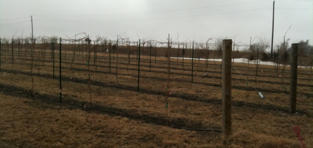

|
North America >
USA >
Nebraska >
Lancaster County >
Deer Springs Winery

Deer Springs Winery
Lincoln, NE
Founded in 2006, Deer Springs uses all Nebraska grown grapes including 3 acres of their own vines.
www.deerspringswinery.com
$5 tasting fee.
Vintages:
Brianna Nebraska
2008
Edelweiss Nebraska
2008
LaCrosse Nebraska
2008
Traminette Nebraska
2008
Vignoles Nebraska
2008
Gypsy Red Nebraska
2009
|